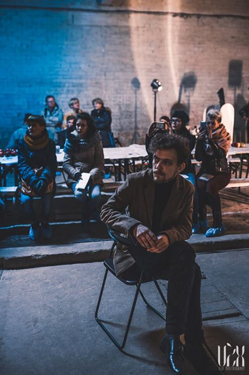
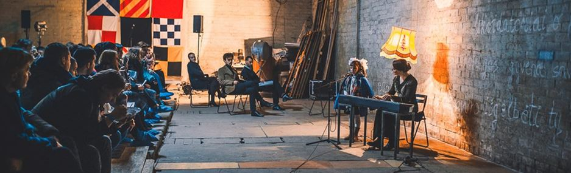
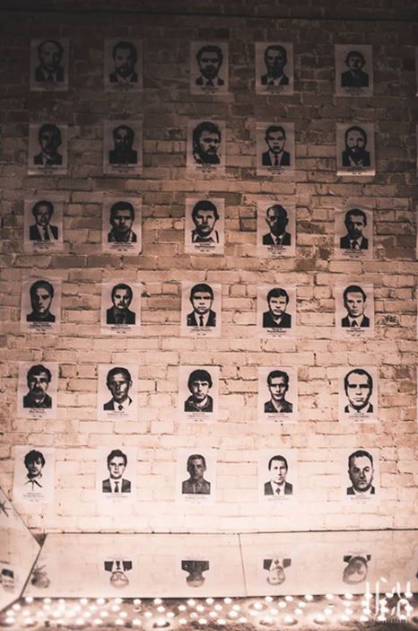
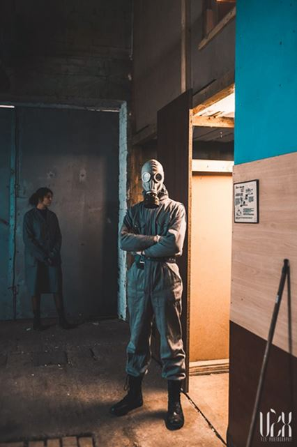
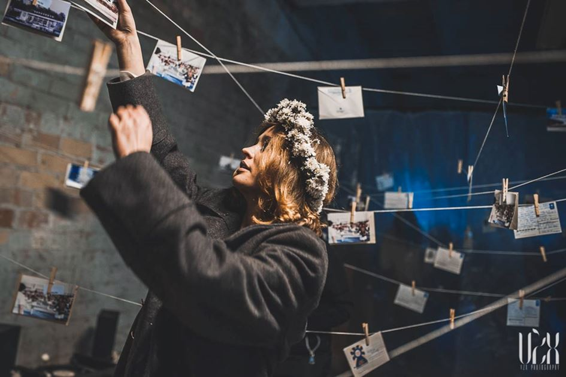
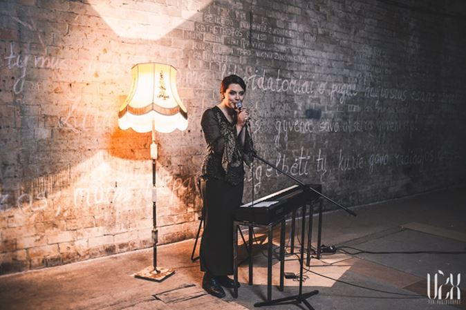
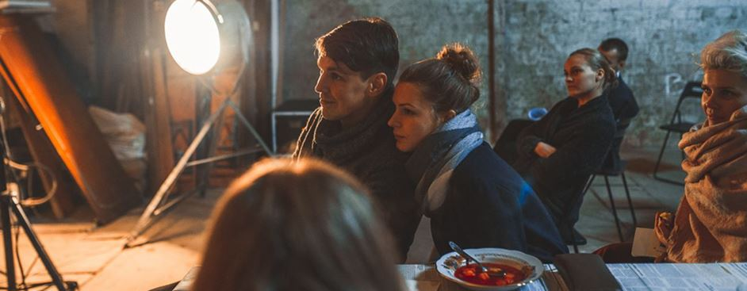
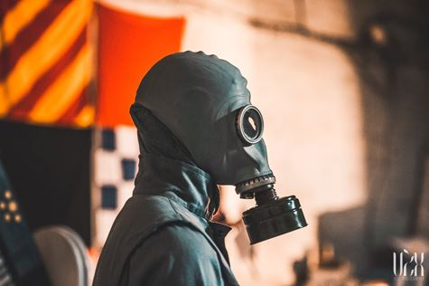

10. Et le troisième ange sonna de la trompette ; et il tomba du ciel une grande étoile, brûlant comme un flambeau, et elle tomba sur le tiers des fleuves et sur les sources des eaux. 11. Et le nom de l'étoile est l'Absinthe ; et le tiers des eaux fut changé en absinthe ; et une grande partie des hommes mourut par les eaux, parce qu'elles étaient devenues amères.
Nouveau Testament. Apocalypse de St Jean.
En avril 1996, alors que je promenais dans Vilnius, je suis tombé nez-à-nez avec un cortège de manifestants. Une manifestation était un événement incongru en soi, mais le fait qu’ils étaient à peine dix ajoutait à cette incongruité. Parmi eux, un homme me raconta Tchernobyl. Je ne connaissais rien de cet accident – ou plutôt je savais que le nuage radioactif c’était arrêté à la frontière franco-suisse. Cet homme était un ancien liquidateur. Est-il encore vivant je l’ignore, mais je pense souvent à lui, et notre rencontre ne fut pas vaine. Peu après, je suis parti en pèlerinage dans la zone interdite. Cette année, en 2016, c’est-à-dire 30 ans après cette catastrophe nucléaire, je suis retourné en Lituanie pour fabriquer un spectacle, qui tient plus d’une dérive chère à certains auteurs disparus, que d’un spectacle à proprement parler. J’ai embarqué les 17 jeunes acteurs du Jeune théâtre de Klaipéda dans cette aventure collective…
Parmi l’immense matière qui nourrit notre travail d’élaboration de cette création, une fiction visionnaire – Stalker d’Andreï Tarkovski et deux documentaires tout aussi incontournables – Le piège atomique et Controverses nucléaires de Wladimir Tchertkoff. Ce dernier, journaliste de renom, a publié un livre qui est le point de référence de la création en cours, comme un phare dans la nuit – Le crime de Tchernobyl (Actes Sud, 2006). Outre le cinéma : un livre fondamental sur le sujet, entre le témoignage et le roman – La supplication, de Svetlana Alexiévitch – Prix Nobel de littérature.
Outre ces références, nous travaillons à partir d’improvisations et de constants aller- retours entre la position de spectateurs et celle d’acteurs - le processus et la forme étant ce sur à quoi nous devons prêter une vigilance accrue.
Tarkovski - Le lieu central de l’histoire de Stalker est une zone interdite dans laquelle serait tombée une météorite (la zone interdite existe aussi autour de Tchernobyl et désormais de Fukushima). La traverser présente un danger mortel et le Stalker chargé de montrer la zone y fait pénétrer en fraude un physicien et un écrivain. C’est une sorte de passeur, d'initiateur qui conduit ces hommes au cœur de la zone dans une chambre où tous les vœux seraient exaucés. A la fin de cette quête, Stalker a perdu sa foi dans l'homme et dans la possibilité de lui donner le bonheur. La trame de cette histoire va servir de point de départ au spectacle à venir.
Wladimir Tchertkoff – Le réalisateur propose de venir animer une conférence publique autour de ses films. Celle-ci précèderait le spectacle et permettra à l’analyse politique d’exister. La partie dite « spectacle » ne peut pas aller sans un temps dédiée à la projection des documentaires qui mettent en lumière les mécanismes qui sapent toute possibilité de prévention pour les populations les plus touchées. Et ni sans la possibilité d'échanger, de le questionner. Se joindrait éventuellement au réalisateur le philosophe Cédric Cagnat, dont l’exposé se centre autour du concept de Méga Machine.
Il est à noter qu’Alexiévitch est invitée par le théâtre de Klaipéda pour parler de la Supplication, traduite en lituanien, qui nous sert de fonds littéraire et de mine de témoignages pour incarner la parole des habitants de Pripyat, et plus généralement de l’ex URSS.
Présence des amateurs - Il est nécessaire d’embarquer des habitants des villes où nous jouons dans l’aventure, pour incarner la réalité de la masse, du nombre, mais aussi pour diffuser les enjeux de notre parole dans les esprits et dans les cœurs. Parce qu’au-delà du geste artistique c’est évidemment un acte politique fort. Les amateurs qui nous rejoignent sont des témoins privilégiés de l’acte théâtral, qu’ils ont envie de défendre et de raconter autour d’eux. Ils mesurent l’horreur de la catastrophe et de ses conséquences et ressentent le besoin de lutter contre le déni, et de transmettre à leurs familles, leurs collègues, leurs amis le désir de s’informer, de réfléchir et de rester vigilants.
Car ce qui est tout à fait déroutant c’est ce sentiment que la catastrophe n’appartient pas au passé, mais à l’avenir, et que ces témoignages qui nous parlent de nous, viennent autant du fonds des âges que du futur.
Pour éviter les écueils d’une théâtralisation de la catastrophe, je propose aux acteurs de créer un Musée de la catastrophe. Cette idée de bâtir un musée répond aux enjeux du spectacle en même temps qu’elle questionne habilement la contradiction dans laquelle nous sommes placés : comment muséifier une telle catastrophe puisqu’elle se déroule sous nos yeux et nous survivra, et en même temps comment ne pas le faire ? Car un Musée est d’abord un lieu qui témoigne, qui à l’occasion rend hommage et qui permet avant tout de transmettre et de ne pas oublier – l’oubli nous apparaît alors comme un crime de plus, comme le crime ultime peut-être. La construction de ce Musée de la Catastrophe Durable évoque la Zone Interdite et résout du même coup le problème de la compassion en mettant le spectateur à une juste distance.
Nous avons décidé de l’appeler Le Sarcophage. Inutile de chercher midi à quatorze heures.
Notre volonté est de transformer le spectateur en expérimentateur, en l’intégrant à la narration au même titre que nos acteurs, mais évidemment avec un statut différent. Changeant sans cesse d’espaces, le spectateur change de point de vue, il expérimente autrement la question du regard et de sa réflec(x)tion - qu’en est-il de son regard quand il attend que quelque chose se passe ? Qu’en est-il de son regard dans le bus, lorsqu’il voyage et qu’un guide s’adresse à lui ? Et dans le musée? Que regarde-t-il et comment ? Et n’est-il pas alors aussi regardé ? Acteur de son errance, de ses découvertes, de salle en salle, qui se questionne sur son propre regard. D’où voit-il la catastrophe et comment la pense-t-il?
Traversés par la question du regard, il nous semblait que le Sarcophage, ce musée de la catastrophe durable offrait là encore une piste intéressante à suivre.
Notre proposition artistique et culturelle ne donne aucune réponse, n’assène aucun dogme mais ouvre de nombreuses pistes possibles de réflexion, le travail est à faire ensemble, chacun est libre de circuler dans le Sarcophage, comme bon lui semble, chacun est libre de faire ses propres associations, de formuler ses propres questions, de choisir de se positionner face à cet objet théâtral.
Comme tout musée, le Sarcophage, tient tout autant du magasin de curiosité que du centre commercial, c’est un temple et un amphithéâtre, enfin, il symbolise et réalise ce que Tarkovski avait écrit : « la fin du monde a déjà eu lieu, mais personne ne s’en est aperçu »
En avril 2016, en pleine commémoration très discrète de l’accident je suis à Klaipéda, en repérage. Il s’agit de trouver un lieu possible d’installation du Sarcophage ainsi que de rencontrer les acteurs et le directeur du théâtre. Nous échangeons sur le contenu du projet, et sur sa forme, qui n’est autre que « le fonds remonté à la surface » comme le dit si bien Hugo. Ces journées sont prometteuses puisque Tomas Jankauskas directeur administratif et Valentinas Masalskis, acteur, metteur en scène et directeur artistique, sont enthousiastes à l’idée de mettre le théâtre à disposition pour 4 semaines de travail en octobre, et d’impliquer l’ensemble des acteurs du Jeune Théâtre de Klaipéda. Non loin, la construction de la centrale nucléaire d’Astravets, dans le nord-ouest de la Biélorussie est lancée. Je ne peux m’empêcher de penser à la centrale nucléaire de Mühleberg, en Suisse, qui elle devrait fermer dans les prochaines années.
En octobre 2016, je repars donc créer à Klaipéda « Une étoile nommée Absinthe » (Žvaigždės vardas – Metėlė en lituanien) avant une tournée en Lituanie. Pendant ce temps, en Ukraine, deux multinationales françaises finalisent la nouvelle enceinte de confinement recouvrant le sarcophage, et non loin de chez moi, dans les Alpes, du césium 137 est retrouvé dans des champignons .
En travaillant sur l’atome et sa capacité à désintégrer les cellules vivantes, à les transmuter, je n’ai pu m’empêcher de penser au transhumanisme. C’est comme si cette catastrophe nucléaire était l’image de l’atomisation finale de l’individu – l’horizon indépassable et inavoué des Lumières. Après avoir désintégré toute forme d’altérité sociétale (communauté, tribu, clan…), après avoir désintégré la famille (comme dernière cellule pouvant lui résister), l’hypermodernité, qui est né d’un coït entre l’ultra-libéralisme et l’ultra-droit-de-l’hommisme, désintègre l’individu. Le transgenre en est le symbole. Et ce transgenre est à la fois l’aboutissement d’un long processus entamé depuis les Lumières (s’opposant ainsi à la Lumière), et le début d’un nouveau-monde, transhumaniste, dont la catastrophe de Tchernobyl, avec son lot de mutations du vivant, était un signe et demeure une image.
Le spectacle commence, comme il se doit, au théâtre, mais au bout d’un quart-d’heure il est interrompu par l’actrice elle-même, qui invite le public à la suivre, jusqu’à son jardin secret – un lieu à la mémoire de son défunt mari et des centaines de milliers d’hommes qui sont morts dans cette guerre contre l’atome.
Le spectacle est donc poursuivi en bus jusqu’en rase campagne où les spectateurs descendent pour rejoindre la comédienne dans un hangar désaffecté. Là, nous avons créé notre musée de la catastrophe – le Sarcophage.
Chacun des spectateurs a pu ainsi aller de salles en salles voir des installations, des projections vidéos, se recueillir dans un mausolée, assister ou prendre part à des mises en scènes de micro-spectacles interactifs, et se réunir autour d’une grande table où le personnel du musée a servi une soupe pour tout le monde. Au total, 17 acteurs et 18 étudiants de l’Académie Théâtre ont créé avec moi cet « événement ».
Cette première a eu lieu le 25 octobre, il faisait 1 degré, personne ne s’est plaint du froid jusqu’au feu d’artifice final qui célébrait le 30ème anniversaire commémoratif de l’accident de Tchernobyl. Au fonds d’un des bus qui ramenait les spectateurs en ville, une jeune fille pleurait. Elle devait avoir 20 ans, à peine. Je n’ai pas osé lui parler, mais elle a dit à sa voisine : « On fait comme si de rien n’était, au quotidien, mais Tchernobyl c’est pourtant le début du génocide européen ».
Au cours de l’année 2017 - Ce spectacle modulable va tenter de s’importer en France, à dans des lieux abandonnés que nous cherchons encore, en espérant contre toute logique que les normes, les mesures et les services de sécurité ne nous empêchent pas de construire notre musée et d’accueillir du public.
« L’empathie profonde que j’ai ressentie et sur laquelle la proposition des Amis de Frank Nogent repose, n’enlève en rien la prise de conscience socio-politique. Au contraire. Il fallait en passer par là pour déverrouiller ce que nos raisonnements rationnels nous susurrent en permanence, pour continuer à vivre, malgré Tchernobyl, malgré Fukushima, malgré… quelle prochaine catastrophe ?
Bien souvent le théâtre documentaire reste un placardage d’idées dans lesquelles nous ne nous impliquons pas au-delà d’un acquiescement évident. Jean-Cyril Vadi dépasse la prise de conscience pour impliquer viscéralement le spectateur en le transformant en viveur. Celui-ci vit réellement la visite du musée, tout comme il vit la rencontre avec ces gens-là… il vit le voyage en car, comme il a vécu l’attente interminable, l’inquiétude ou l’agacement. Autant de situations identifiées ou non faisant partie du processus. » Véronique Perruchon -Expert DRAC et Maître de Conférence à Lille-Universités
J.-C. V.
* On dit que Tchernobyl signifie « grande absinthe » (Artemisia absinthium) en russe, mais c'est en réalité un mot ukrainien qui désigne un « buisson sombre » et parfois l’ambroisie (Ambrosia artemisiifolia). Or l’ambroisie est également appelée absinthe par le commun des mortels. Si la véritable grande absinthe est verte, avec un duvet argenté sur un côté, il n’en demeure pas moins que la référence à l’apocalypse, ne serait-ce à cause de la nature et l’ampleur de la catastrophe, est inévitable. Mais, bien sûr, la Bible ne fait pas référence à l'Artemisia absinthium, car cette espèce n'existe pas au Moyen-Orient - l'espèce d'Artemisia mentionnée dans la Bible est probablement l'Artemisia judaeica. Mais cette précision reste superficielle et ne saurait traduire la charge symbolique des mots et la force des images liant l’accident de Tchernobyl à la fin du monde, telle qu’elle est décrite dans l’apocalypse de St Jean…
Partager cette page